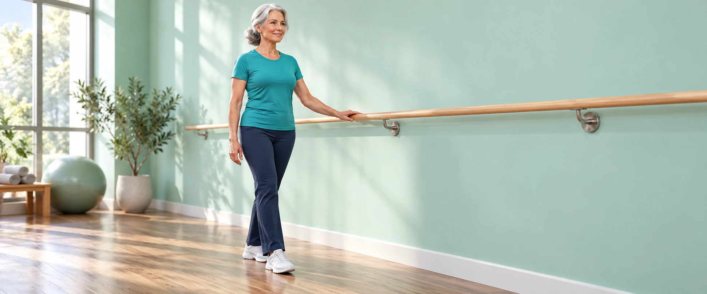

Before you start
For general exercise information. Follow your physiotherapist’s advice and any surgery restrictions. Use a fixed support for balance work. Stop for pain, dizziness or unusual breathlessness. Floor exercises are optional if transfers are unsafe.
Choose comfortable settings and rest as needed. None of these exercises guarantees a cure or prevents all falls.
Session stopped
Today's plan
This shows today's routine first, so you can check it and watch demos before you begin. Or start one exercise from the list below.
Starting settings and gradual progression
General starting guidance for an adult who can perform these movements safely; it is not an individual rehabilitation prescription. If you need help standing, have recent illness or surgery, or are unsure which exercises are safe, ask your physiotherapist for an adapted plan first.
Practise 3 days a week, with a fixed support within reach. If standing balance is unsafe, ask a physiotherapist to adapt this routine.
| Exercise | Level 1 | Level 2 | Level 3 | Level 4 |
|---|---|---|---|---|
| Tandem stance (each foot position) | 2 × 10 sec | 2 × 15 sec | 3 × 15 sec | 3 × 20 sec |
| Supported single-leg stand (each leg) | 2 × 5 sec | 2 × 8 sec | 3 × 8 sec | 3 × 10 sec |
| Weight shifts (one rep = left and right) | 1 × 5 reps | 1 × 8 reps | 2 × 8 reps | 2 × 10 reps |
Rest 15 seconds between sets or sides and 15 seconds between exercises by default; take longer if needed. No scheduled rest between repetitions. Demonstration speed: Normal (1×); choose Slow to learn the movement. Demo speed does not change the exercise-session timings.
Keep the same support throughout this plan. Do not close your eyes or practise on an unstable surface to increase difficulty.
In Settings, use Apply level 1–4 to change the timings. Nothing advances automatically. Only progress after the current workload is comfortable and controlled, with no increased pain or unusual fatigue later that day or the next day.
Basis: NHS strength, NHS balance, NHS flexibility and NHS walking. Exact progression steps and rest intervals are suggested app presets; they are not an individual treatment prescription.
Keep a sturdy chair, rail or wall within reach. Stop straight away if you feel pain, dizziness, unusual shortness of breath or unsteadiness. If you are unsure, check with your doctor or physiotherapist.